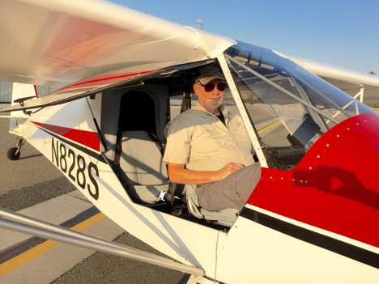
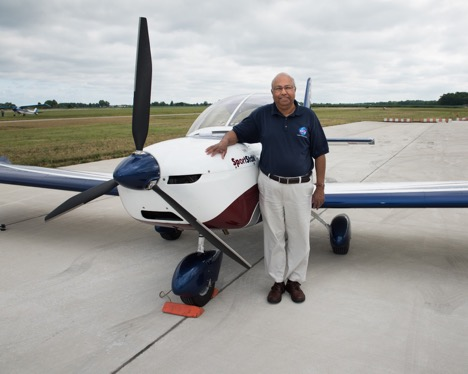
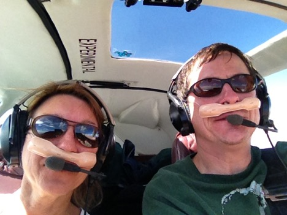

<div class="container-fluid center-1" ng-controller="AboutController">
    <div class="row" style="margin-top: 5%;font-size: 16px; text-align: left">
        <div class="col-xs-10 col-xs-offset-1">


            <div ng-if="showCollabs">

                <h3><span class="section-title" style="color:black">About the Project</span></h3>
                <br>
                <div ng-repeat="col in collaborators">
                    <h4><span class="section-title" style="color:black">{{col.name}}</span></h4>
                <p>{{col.description}}</p>
                <p>For more info, visit <a  target="_blank" ng-href="{{col.link}}">{{col.link}}</a></p>
                </div>


            </div>

            <div ng-if="showAlgal">


            <h3><span class="section-title" style="color:black">About the Algal Bloom Tracking Project</span></h3>
            <p>
                Organized by a pilot and a NASA scientist, Dr. Rafat Ansari, this project coordinates volunteer pilots from around the
                country to fly over and photograph bodies of water that are prone to algal blooms outbreaks.
                Toxic Algae pose serious problems to human health, fish, and recreation industry.
                The economic damage to commercial fishing is $100 million and rising (NOAA).
                There are 600,000 private pilots in the U.S. and over 200,000 general aviation (GA) aircraft.
                Aerial images can be used to study water quality scientific issues in aquatic systems.
                <!--A fraction of this untapped resource can be used to study water quality scientific issues in aquatic systems.-->
                Working together with Cartoscope, the Algal Bloom Project enables the public to help analyze the aerial images and
                form an early warning system for algal blooms.
            </p>
            <a href="https://re.grc.nasa.gov/citizen-scientists-track-algal-blooms/">https://re.grc.nasa.gov/citizen-scientists-track-algal-blooms/</a>


            <h3><span class="section-title" style="color:black">Algal Bloom Tracking Project Team</span></h3>
            <h4><span class="section-title" style="color:black">Principal Investigator</span></h4>
            <p>Rafat Ansari, Ph.D., NASA Glenn Research Center</p>
            <h4><span class="section-title" style="color:black">Co-principal Investigators</span></h4>
            <p>Liane Guild, Ph.D., NASA Ames Research Center</p>
            <p>Joe Ortiz, Ph.D., Kent State University</p>
            <p>Pete Clapham, Ph.D., Cleveland State University</p>
            <h4><span class="section-title" style="color:black">Lead Pilot Coordinator</span></h4>
            <p>Terry Schubert, M.Ed, Lake Erie, Ohio</p>

            <h4><span class="section-title" style="color:black">Contributing Citizen Scientist Pilots</span></h4>
            <p>Dr. Robert (Key) Dismukes, CA</p>
            <p>David Nelson, MN</p>
            <p>Dr. Rafat Ansari, OH, MI</p>
            <p>Terry Schubert, OH, MI, PA</p>
            <p>Ronald Shemenski, OH, MI</p>

            <h4><span class="section-title" style="color:black">Citizen Science Website Lead</span></h4>
            <p>Sumit Sengupta</p>
            <a href="http://algalbloomcitizenscience.org/install/WP/" style="word-wrap: break-word">
                Citizen Science Website</a>


            <br>

            <center>
            <div id="AlgalCarousel" class="carousel slide" data-ride="carousel" style="margin-top: 10px;" >
                <ol class="carousel-indicators">
                    <li data-target="#AlgalCarousel" data-slide-to="0" class="active"></li>
                    <li data-target="#AlgalCarousel" data-slide-to="1"></li>
                    <li data-target="#AlgalCarousel" data-slide-to="2"></li>
                    <li data-target="#AlgalCarousel" data-slide-to="3"></li>
                </ol>
                <div class="carousel-inner" style="height:350px !important;" role="listbox">
                    <!--Slide 1-->
                    <div class="item active">
                        
                            <div class="carousel-caption top">
                                <p>Dr. Robert Dismukes with his airplane <br>(Photo Credit: Dr. Dismukes)</p>
                            </div>
                    </div>
                    <!--Slide 2-->
                    <div class="item">
                        
                        <div class="carousel-caption top">
                            <p>Terry Schubert with his airplane <br>(Photo Credit: Marvin Smith, NASA GRC)</p>
                        </div>
                    </div>
                    <!--Slide 3-->
                    <div class="item">
                        
                        <div class="carousel-caption top">
                            <p>Dr. Rafat Ansari with his airplane <br>(Photo Credit: Marvin Smith, NASA GRC)</p>
                        </div>
                    </div>
                    <!--Slide 4-->
                    <div class="item">
                        
                        <div class="carousel-caption top">
                            <p>David Nelson flying with his wife over upper Mississippi River<br> (Photo Credit: Dave Nelson)</p>
                        </div>
                    </div>
                </div>

            </div>
            </center>

            </div>

            <h3><span class="section-title" style="color:black">About Cartoscope</span></h3>
            <p>
                Cartoscope is a platform for citizen science through crowdsourced data analysis and mapping.
                By sorting, labelling, and locating images, community members can contribute to a variety of
                mapping projects, such as disaster response. Each member’s contribution adds up! Organizations
                can create their own projects and invite participants to help assist with their missions.
            </p>
            <p>
                This project builds on Public Lab's MapMill Project: <a href="https://mapmill.org/">https://mapmill.org</a>. For more on Public Lab see
                <a href="https://publiclab.org">https://publiclab.org</a>.
            </p>

            <h3 class="section-title" style="color:black">Credits</h3>

            <p>
                Sophie Spatharioti, Lorna Dsilva, Vasanti Mahajan, Rick Menasce, Shubhi Mittal, Kisalaya Prasad,
                Nitin Shetty, Melanie Smith, Becca Govoni
            </p>


            <h3 class="section-title" style="color:black">
                Principal Investigators
            </h3>
            <p>
                Seth Cooper, Sara Wylie
            </p>


            <h3 class="section-title" style="color:black">
                Contact us:
            </h3>
            <p> feedback@cartosco.pe </p>


            <h3 class="section-title" style="color:black">
                Supported by
            </h3>
            <p>This material is based upon work supported by Google, Northeastern University and the National Science Foundation under Grant No. 1629879. </p>

            <p class="section-title">
            Any opinions, findings, and conclusions or recommendations expressed in this material are those of the author(s)
                and do not necessarily reflect the views of the National Science Foundation and other supporting organizations.
            </p>

            <!--<p>Google, Northeastern University, Public Lab and New World Foundation</p>-->

            <!--<p class="section-title">-->
                   <!--Any opinions, findings, and conclusions or recommendations expressed in this material-->
                <!--are those of the author(s) and do not necessarily reflect the views of supporting organizations.-->
            <!--</p>-->

        </div>
    </div>
</div>